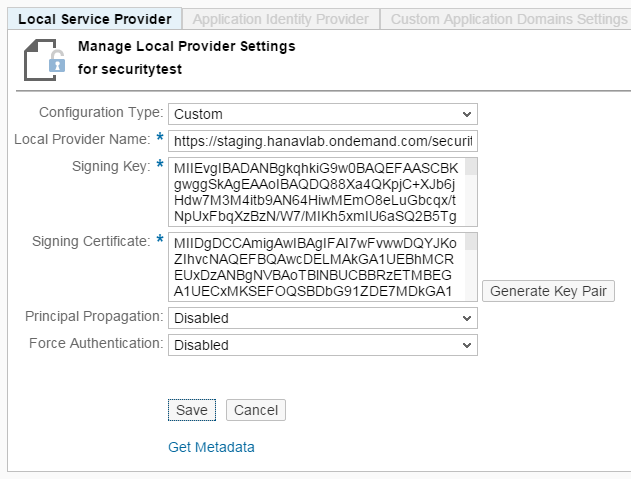

Security Testing on the Cloud (with a Local Identity Provider)
You can use a local test identity provider (IdP) to test single sign on (SSO) and identity federation of an SAP Cloud Platform application end-to-end.
This scenario offers simplified testing in which developers establish trust to an application deployed in the cloud with an easy-to-use local test identity provider .
For more information about the identity provider concept in SAP Cloud Platform, see ID Federation with the Corporate Identity Provider.
- Prerequisites
- Procedure
- 1. Set up the local test IdP
- 2. Configure the service provider of your account in SAP Cloud Platform
- 3. (Optional ) Configure the local IdP name
- 4. Configure trust on SAP Cloud Platform to the local test IdP
- 5. Generate self sign-key pair and certificate for the local test IdP (optional)
- 6. Configure trust on the local test IdP to SAP Cloud Platform
-
You have set up and configured the Eclipse IDE for Java EE Developers and SAP Cloud Platform Tools for Java. For more information, see Setting Up the Tools and SDK.
-
You have developed and deployed your application on SAP Cloud Platform. For more information, see Creating an SAP Cloud Platform Application.
The usage of the local test identity provider involves the following steps:
- Open the Eclipse IDE.
- Go to the Servers view.
- From the context menu, choose
 New
New  Server
Server  .
. - In the Define a new server wizard, select Java Web Server, Java Web Tomcat 7 Server, or Java EE 6 Web Profile Server (depending on the SDK you use).
- Start the server. The local test IdP is packaged within the SDK, so when you start the server, it will start as well.
- Double-click the server and open the Users tab page.
- Define local test IdP users and their attributes. Exemplary data:

For more information about the Users editor, see Testing User Authentication on the Local Server.
- In a Web browser, open the cockpit and navigate to Security Trust Local Service Provider .
- Choose Edit.
- For Configuration Type, choose Custom.
- Choose Generate Key Pair to generate a new signing key and self-signed certificate.
- For the rest of the fields, leave the default values.
- Choose Save.
- Choose Get Metadata to download and save the SAML 2.0 metadata
identifying your SAP Cloud Platform account as a service
provider. You will have to import this metadata into the local test IdP to
configure trust to SAP Cloud Platform in the procedure that
follows.

You need to configure your local IdP name if you want to use more than one local IdP. Default local IdP name: localidp.
- In the Eclipse IDE, go to the already set up local server that will be used as local IdP.
- In the config_master/com.sap.core.jpaas.security.saml2.cfg/ folder, create a file named local_idp.cfg.
- In the file, add a property:
localidp_name=<idpname you want to use>
- Restart the local server.
The trust settings on SAP Cloud Platform for the local test IdP are configured in the same way as with any other productive IdP.
- During the configuration, use the local test IdP metadata that can be requested under the
following link:
http://<idp_host>:<idp_port>/saml2/localidp/metadata,
where <idp_host> and <idp_port> are the local server host and port.
To find the <idp_port>, go to Servers, double click on the local server and choose
Overview Ports Configuration . - Configure trust on the cloud to the local test IdP.
- Open the cockpit in a Web browser, navigate to Security Trust Application Identity Provider , and then click Add Trusted Identity
Provider.
- In General tab page, use the Metadata File
Browse button to add the local test IdP
metadata.
All the needed values are filled in automatically.
- Choose Save & Close.
For more information, see ID Federation with the Corporate Identity Provider
- Open the cockpit in a Web browser, navigate to
- Configure the User Attributes.
Assertion-based attributes are used to define a mapping between attributes in the SAML assertion issued by the local test IdP and user attributes on the Cloud.
This allows you to essentially pass any attribute exposed by the local test IdP to an attribute used in your application in the cloud.
Define user attributes in the local test IdP by using the Eclipse IDE Users editor for SAP Cloud Platform as is described in Setting up the local test IdP.
To add an assertion-based attribute, proceed as follows:- Open the cockpit in a Web browser, navigate to Security Trust Application Identity Provider .
- From the table, choose the entry localidp, open the Attributes tab page, and click on Add Assertion-Based Attribute.
- In Assertion Attribute, enter the name of the attribute contained in the SAML 2.0 assertion issued by the local test IdP. These are the same user attributes you defined in the Eclipse IDE Users editor when setting the local test IdP.
- In Principal Attribute, enter the name of the user attribute as referred in the tested application.
- Choose Save & Close.
If an error occurs while requesting the IdP metadata and the metadata cannot be generated, you can do the following:
- Generate a localidp.jks keyfile manually. The key and certificate are needed for signing the information that the local test IdP will exchange with SAP Cloud Platform.
- Open the directory <JAVA_HOME>/jre/bin/keytool
- Open a command line and execute the following command:
where <fullpath_dir_name> is the directory path where the jks will be saved after the creation.
keytool -genkeypair -dname "CN=localidp" -keyalg "RSA" -validity 3650 -alias localidp -storepass localidp -keypass localidp -keystore <fullpath_dir_name>\localidp.jks
- Under the Server directory, go to config_master\com.sap.core.jpaas.security.saml2.cfg and create a directory with name localidp.
- Copy the localidp.jks file under localidp directory.
- In the Eclipse IDE, go to the already set up local test IdP Server.
- Copy the file with the metadata describing SAP Cloud Platform as a
service provider under the local server directory
config_master/com.sap.core.jpaas.security.saml2.cfg/localidp.
To get this metadata, in the cockpit, choose Security Trust Local Service Provider Get Metadata .
You can now access your application, deployed on the cloud, and test it against the local test IdP and its defined users and attributes.